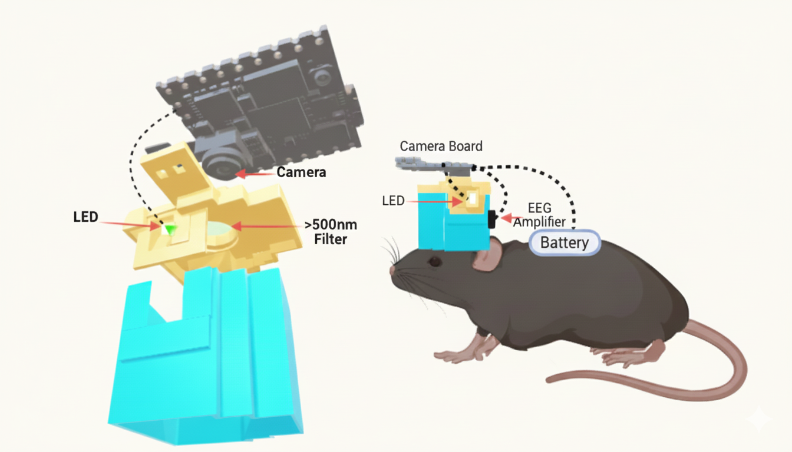

All projects are tailored to specific scientific queries and are run by undergraduate research assistants.
Using transgenic animals we are able to simultaneously capture and cross-correlate neural activity, vascular fluctuations, and behavioral output. This work enhances our understanding of brain energy dynamics and informs translational models of neurological and psychiatric disorders.
This tool is being developed as an open-source resource for the neuroscience community.

Mounted simultaneous EEG + optical imaging preparation.
This project aims to determine whether in utero pharmaceutical intervetion can mitigate the onset and development of fetal alcohol spectrum disorders (FASDs).
This project aims to interrogate the role of AQP4 in the behavioral impariments associated with acute alcohol exposure.
Brain-computer interfaces are rapidly advancing the field of neuroscience. This project brings that technology into the classroom through non-invasive EEG and EMG experiments, enabling students to develop hands-on skills in designing and running BCI protocols.
This tool is being developed as an open-source resource for the neuroscience and STEM-education communities.